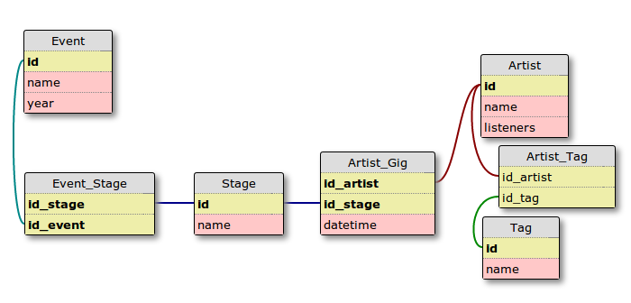
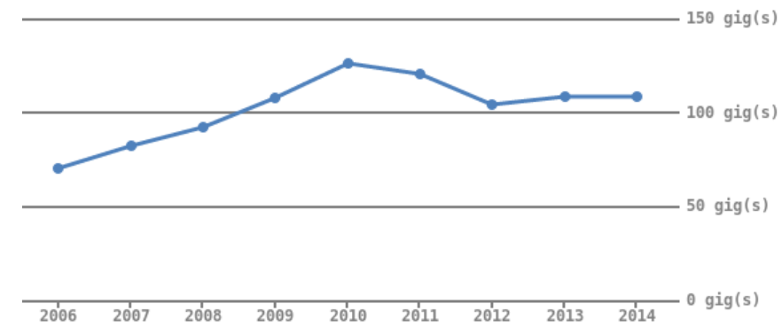
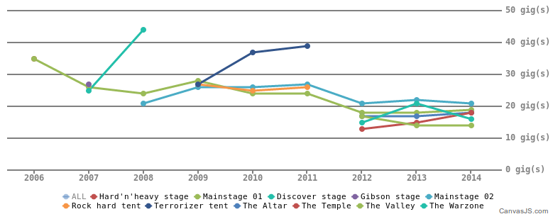

Elastica
Recherche « Like a boss » dans ton site

@damienalexandre


Conseil, réalisation, audit, expertise et formation
…Poney, Guinness et gif animé.
Plan du site
- Qu'est ce que la recherche ;
- Présentation rapide d'Elasticsearch ;
- Elastica ♥ et exemples
avec du code !- Fil rouge ;
- Indexer ;
- Rechercher ;
- Définir un mapping ;
- Jouer avec les aggrégations.
- Pro-tips ©
- Free Hugs.
Ce dont nous ne parlerons pas
- L'installation (RTFM) ;
- Le scaling, les nodes, les shards, les replicas ;
- Le monitoring, marvel ;
- L'indexation temps réel ;
- L'utilisation en PDS ;
- La conception de requêtes pertinentes ;
- La mise en production...
Le temps nous est compté.
La recherche
Les SGBD ne savent pas faire
- lenteur proportionnelle à la taille des données ;
- pertinence complexe à calculer ;
- pas de scalling (vertical seulement) ;
- index à créer manuellement ;
- pas d'agrégation ;
- pas leur boulôt.
Un exemple de recherche
"(($wpdb->posts.post_title LIKE '{$n}{$term}{$n}')
OR ($wpdb->posts.post_content LIKE '{$n}{$term}{$n}'))";WordPress has killer search baked in. Every word you write is fully searchable […]
Introducing
En 2 mots
- Lucene on steroïdes ;
- Stockage de documents JSON sans mapping ;
- Interface REST ;
- Distribué et scalable horizontalement ;
- Open source, en Java ¯\_(ツ)_/¯
- Zéro configuration.
- Ah et c'est Elasticsearch, pas ElasticSearch.
Documents JSON
{
"content": "Yolo",
"created_by": {
"name": "Damin0u"
}
}Index et type
Nous stockons les documents dans des types, eux mêmes inclus dans un index.
http://localhost:9200/yolo/test/1Indexation via POST
curl -XPOST "http://localhost:9200/yolo/test/1" -d '
{
"post_date": "2013/10/30 13:37:00",
"content": "Elasticsearch is swag.",
"author": {
"name": "Damien",
}
}'La recherche
curl -XPOST 'http://localhost:9200/yolo/test/_search?pretty=true' -d '
{
"query": {
"match_all" : {}
}
}'Elasticsearch et PHP
Les clients PHP
- Elastica ;
- SherlockPHP ;
- Nervattoo/Elasticsearch ;
- Le client officiel ;
- CElastica en Zephir.
Elastica
- Créé en octobre 2010 par Nicolas Ruflin ;
- Documentation sur Elastica.io ;
- Testé, maintenue activement, compatible ES 1.1 ;
- Interface object par dessus Elasticsearch.
Tout est objet
- Index ;
- Type ;
- Query ;
- Document ;
- ResultSet.
Fil rouge
Concerts au Hellfest
Chaque prestation d'un artiste est un document :
- Édition du festival ;
- Artiste ;
- Scéne ;
- Des métas données sur l'artiste (tags, genre, auditeurs).
En SQL normalisé
Dénormalisé
{
name: "Black Sabbath",
listeners: 2128492,
description: "Black Sabbath is an English heavy...",
festival: "Hellfest 2014",
year: 2014,
date: "2014, Sunday 22 June",
stage: "Main Stage 01",
tags: [
"heavy metal",
"hard rock",
"classic rock",
"metal"
]
}Oubliez vos
FOREIGN KEY !
Installation
composer require ruflin/Elastica dev-master./composer.json has been updated
Loading composer repositories with package information
Updating dependencies (including require-dev)
- Installing ruflin/elastica (dev-master 62f63df)
Cloning 62f63df4d093f325b6848fa0bedae23da6ece3d7Créer notre Index
Database pour les SQL-addict
<?php
include("vendor/autoload.php");
// default to localhost:9200, no config!
$elasticaClient = new \Elastica\Client();
/** @var $festivalIndex \Elastica\Index */
$festivalIndex = $elasticaClient->getIndex('festival');
$festivalIndex->exists(); // => falseCréer notre Index
<?php
$festivalIndex->create(
array(
'number_of_shards' => 1,
'number_of_replicas' => 0,
// Analysis here too
),
true // delete index if it already exist
);Créer notre Type
Table pour les SQL-addict
/** @var $hellfestType \Elastica\Type */
$hellfestType = $festivalIndex->getType('hellfest');Indexer nos documents
$gigs = json_decode(file_get_contents("data-merged.json"), true);
// Slow
foreach ($gigs as $gig) {
$hellfestType->addDocument(
new \Elastica\Document('', $gig)
);
}Une requête HTTP par Document !
Bulk indexing !
$docs = array();
foreach ($gigs as $gig) {
$docs[] = new \Elastica\Document('', $gig);
}
// Only one request!
$hellfestType->addDocuments($docs);Créez des bulks de taille raisonnable et abusez-en.
Recherche
- Query DSL, 66 pages de docs !
- Toujours commencer par la version JSON ;
- Utilisez Sense pour la conception.
Installer Sense
- Extension Chrome supprimée 😢;
- Inclus dans Marvel ;
marvel.agent.enabled: false- http://localhost:9200/_plugin/marvel/sense/
Notre première requête
GET festival/hellfest/_search
{
"query": {
"match": {
"name": "slayer"
}
}
}GET INDEX/TYPE/_search
{
"query": {
"TYPE DE RECHERCHE": {
"PARAMÉTRES"
}
}
}Avec Elastica
Obtenir le client et le Type
$elasticaClient = new \Elastica\Client(); // localhost:9200
/** @var $festivalIndex \Elastica\Index */
$festivalIndex = $elasticaClient->getIndex('festival');
/** @var $hellfestType \Elastica\Type */
$hellfestType = $festivalIndex->getType('hellfest');A rendre disponible sous forme de service dans votre application.
Avec Elastica
Construire et lancer la requête
$matchQuery = new \Elastica\Query\Match();
$matchQuery->setField('name', 'Slayer');
// Not mandatory
$searchQuery = new \Elastica\Query();
$searchQuery->setQuery($matchQuery);
$resultSet = $hellfestType->search($matchQuery);Traduire de gauche à droite !
GET festival/hellfest/_search // getType()->search() { "query": { // new \Elastica\Query() "match": { // new \Elastica\Query\Match() "name": "slayer" // setField() } } }
Les namespaces respectent la hiérarchie.
Les réponses
Même respect de la hiérarchie
{
"took": 1,
"timed_out": false,
"_shards": { ... },
"hits": {
"total": 4,
"max_score": 6.2214365,
"hits": [
{
"_index": "festival",
"_type": "hellfest",
"_id": "NPs8-jFuQUShDVSvQazOzQ",
"_score": 6.2214365,
"_source": {
"tags": [
"thrash metal", ...
],
"listeners": 1226045,
"description": "Slayer is a thrash metal band...",
"name": "Slayer" ...
}
}, ...
]
}
}class Elastica\ResultSet { protected $_results => array(4) { [0] => class Elastica\Result { protected $_hit => array(5) { '_index' => "festival" '_type' => "hellfest" '_id' => "CwBTEcsnSgeVsvP52Wjurw" '_score' => double(6.2214365) '_source' => array(8) { ... } } }, ... } protected $_response => class Elastica\Response protected $_query => class Elastica\Query // gift! protected $_took => int(3) protected $_timedOut => bool(false) protected $_totalHits => int(4) protected $_maxScore => double(6.2214365) }
Manipuler le résultat
echo sprintf("Slayer a fait %d Hellfest :\n",
$resultSet->getTotalHits());
foreach ($resultSet->getResults() as $result)
{
/** @var $result \Elastica\Result */
$data = $result->getData();
echo $data['festival']."\n";
}Slayer a fait 4 Hellfest :
Hellfest 2008 Open-Air Edition
Hellfest 2007
Hellfest 2010
Hellfest 2014Slayer est donc un groupe d'habitués :)
Et Elastica c'est facile...
Quid de Motörhead ?
$matchQuery->setField('name', 'Motorhead');
$resultSet = $hellfestType->search($matchQuery);
echo sprintf("Motorhead a fait %d Hellfest\n",
$resultSet->getTotalHits());Motorhead a fait 0 Hellfest
$matchQuery->setField('name', 'Motörhead');
$resultSet = $hellfestType->search($matchQuery);
echo sprintf("Motörhead a fait %d Hellfest\n",
$resultSet->getTotalHits());Motörhead a fait 3 Hellfest
WTF
Motorhead != Motörhead
Tokenization
Rien à voir avec Tolkien.
Tokenization
Séparer les contenus en morceaux facile à trouver.
- J'aime les baguettes ;
- [J'aime] [les] [baguettes] ;
- [aime] [les] [baguet] ;
- [aime] [baguet]
Motörhead
- Analyse par défaut: [motörhead]
- Analyse avec asciifolding: [motorhead]
À appliquer à l'indexation ET à la recherche.
Créer un Analyzer custom
$festivalIndex->create(array(
'number_of_shards' => 1,
'number_of_replicas' => 0,
'analysis' => array(
'analyzer' => array(
'my_awesome_analyzer' => array(
'type' => 'custom',
'tokenizer' => 'standard',
'filter' => array('lowercase', 'asciifolding')
),
)
)
),
true
);
Créer un mapping explicite
$mapping = new \Elastica\Type\Mapping();
$mapping->setType($hellfestType);
$mapping->setProperties(array(
'name' => array(
'type' => 'string',
'analyzer' => 'my_awesome_analyzer',
'boost' => 3
),
'description' => array('type' => 'string', 'analyzer' => 'my_awesome_analyzer'),
'tags' => array('type' => 'string', 'boost' => 2, 'index' => 'not_analyzed'),
));
$mapping->send();Fin du problème !
$matchQuery->setField('name', 'Motorhead');
$resultSet = $hellfestType->search($matchQuery);
echo sprintf("Motorhead a fait %d Hellfest\n",
$resultSet->getTotalHits());Motorhead a fait 3 Hellfest \m/
Recherche par goût
J'aime le progressive metal mais je déteste le grindcore, quel groupe dois-je aller voir en 2014 ?
Rappel du mapping
'tags' => array(
'type' => 'string',
'boost' => 2,
'index' => 'not_analyzed'
),not_analyzed est parfait pour un tag.
Plein de Query
- Possède progressive metal dans le champ tags ;
- Ne possède pas grindcore dans le champ tags ;
- Possède 2014 dans le champ year.
Term Query
{
"term": {
"tags": {
"value": "progressive metal"
}
}
}{
"term": {
"year": {
"value": 2014
}
}
}Bool Query
{
"bool": {
"must": [
// Queries to match
],
"must_not": [
// Queries to not match
]
}
}Traduction avec Elastica
$progressiv = new \Elastica\Query\Term(array(
'tags' => array('value' => 'progressive metal')
));
$year = new \Elastica\Query\Term(array(
'year' => array('value' => 2014)
));
$grindcore = new \Elastica\Query\Term(array(
'tags' => array('value' => 'grindcore')
));$boolQuery = new \Elastica\Query\Bool();
$boolQuery->addMust($progressiv);
$boolQuery->addMust($year);
$boolQuery->addMustNot($grindcore);
$resultSet = $hellfestMappingType->search($boolQuery);
echo sprintf("Il y a %d groupes que tu aime au Hellfest %d\n", $resultSet->getTotalHits(), 2014);
- Angra
- Enslaved
- Opeth
- Protest the Hero
- Sólstafir
Statistiques
Elasticsearch est aussi un super moteur de statistiques !
- Moyenne ;
- Min/Max ;
- Cardinalité ;
- Percentile ;
- Histogrammes ;
- Geographique...
Les aggrégations
Les facets ne sont pas officiellement dépréciées, mais utilisez les Aggrégations !
Concerts par année
GET festival/hellfest/_search
{
"size": 0,
"aggs": {
"by_year": {
"terms": {
"field": "year",
"size": 50
}
}
}
}SELECT COUNT(*) FROM gigs GROUP BY year
Concerts par année
$yearsAgg = new \Elastica\Aggregation\Terms("by_year");
$yearsAgg->setSize(50);
$yearsAgg->setField('year');
$search = new \Elastica\Query();
$search->setSize(0);
$search->addAggregation($yearsAgg);
$results = $type->search($search);
$years = $results->getAggregation('by_year');Doc_count par année !
Excel is so 2002
#YOLO
Imbriquer les scènes
Sky is the limit.
ProTips ©
En vrac...

Désactivez le refresh
Pour le gros bourrins du bulk :
$index->setSettings(array(
"refresh_interval" => "-1"
));$index->setSettings(array(
"refresh_interval" => "1s"
));
$index->optimize();Alias
Faite toujours pointez vos recherches sur un alias !
- Gratuit ;
- Permet de tout ré-indexer ;
- Permet de changer son mapping ;
- Recherches multi-index ;
- Fait briller et ne laisse pas de tâches.
Même Rob Zombie trouve ça cool !
Fields
Vous pouvez demander uniquement quelques champs de votre source. Voir aucun.
$query = Query::create($myQuery);
$query->setFields(['_id']);L'admin réseau pour dira merci.
convertRequestToCurlCommand
<?php
use Elastica\Util;
echo Util::convertRequestToCurlCommand(
$type->getIndex()->getClient()->getLastRequest()
);curl -XGET 'http://host:9200/index/type/_search' -d '{"query":{"query_string":{"query":"coucou"}}}'
Pretty code
This is madness!
new \Elastica\Query\Term();
new \Elastica\Filter\Term();Bonne utilisation des use.
use Elastica\Facet as Facets;
use Elastica\Filter as Filters;
// after
new Query\Term();
new Filter\Term();Trop de match ?
$matching = new \Elastica\Query\Bool();
$matchQuery = new \Elastica\Query\Match();
$matchQuery->setField('name', $terms);
$mathing->addShould($matchQuery);
$matchQuery = new \Elastica\Query\Match();
$matchQuery->setField('pays', $terms);
$mathing->addShould($matchQuery);
$matchQuery = new \Elastica\Query\Match();
$matchQuery->setField('bio', $terms);
$mathing->addShould($matchQuery);
$matchQuery = new \Elastica\Query\Match();
$matchQuery->setField('job', $terms);
$mathing->addShould($matchQuery);Utilisez MultiMatch \o/
$matching = new Query\MultiMatch();
$matching->setQuery($terms);
$matching->setParam('use_dis_max', false);
$matching->setFields(array(
'name',
'bio',
'pays',
'job',
));Supporte les boosts
$matching = new Query\MultiMatch();
$matching->setQuery($terms);
$matching->setParam('use_dis_max', false);
$matching->setFields(array(
'name^10',
'bio^4',
'pays',
'job',
));Abusez de Bool
new Query\Bool();
Toujours utile pour ajouter des must ou must_not à la volée !
Utiliser JSON
Pour tester c'est bien mieux de copier/coller la doc !
$query = '{"query": {"match_all": {}}}';
$path = $index->getName() . '/' . $type->getName() . '/_search';
$response = $client->request($path, Request::GET, $query);
$responseArray = $response->getData();Pas de ResultSet en retour ☹
Avec Symfony2
Utilisez FOSElasticaBundle !
- Un poil en retard (aggregations dans Paginator...) ;
- Des commandes super utiles ;
- Liaison automatique entités => document ES ;
- Logs, debug facilité ;
- ...
La documentation
Elastica.io ne suffit pas.
La doc est cachée ici
https://github.com/ruflin/Elastica/tree/master/test/lib/Elastica/Test
Ne laissez pas vos données dormir dans un datacenter
- Elastica ;
- canvas.js (insérez ici votre lib préférée) ;
- ... ?
- PROFIT !!
Elasticsearch ce n'est pas que de la recherche.
Merci !
Je n'accepte que les questions formattées en JSON.
@damienalexandre
Crédits photos
PHP Weapon / Internet unicorn / Slayer / Animated gifs / Animated gifs / Veste a patch / Favicon
Remerciements
Aller plus loin
Elasticsearch, the definitive guide / Compilation de ressources pour débuter